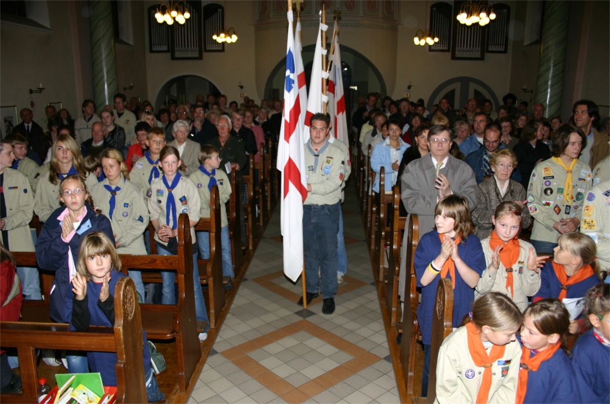
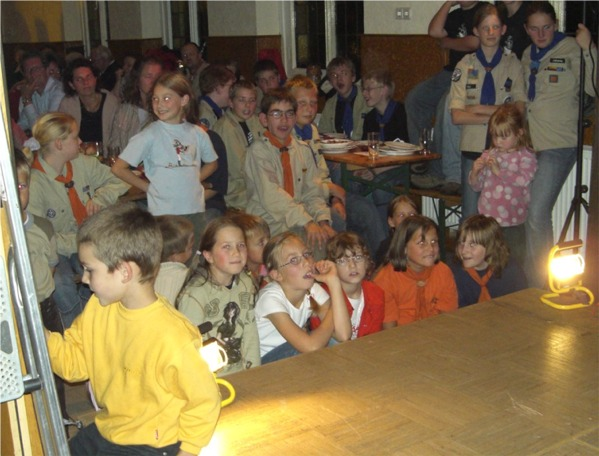
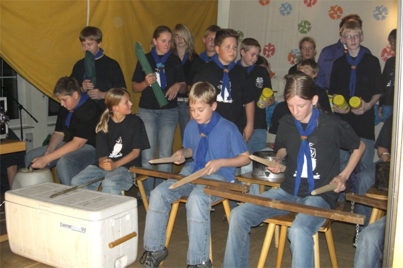
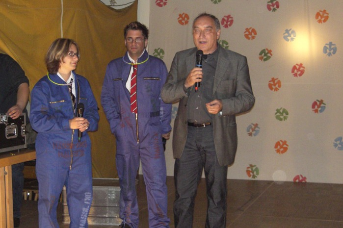
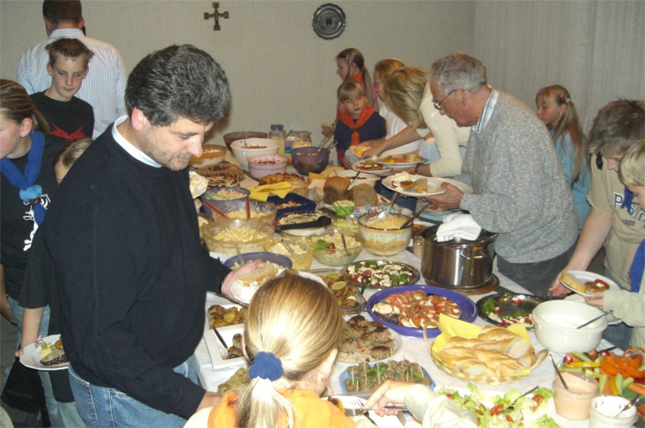
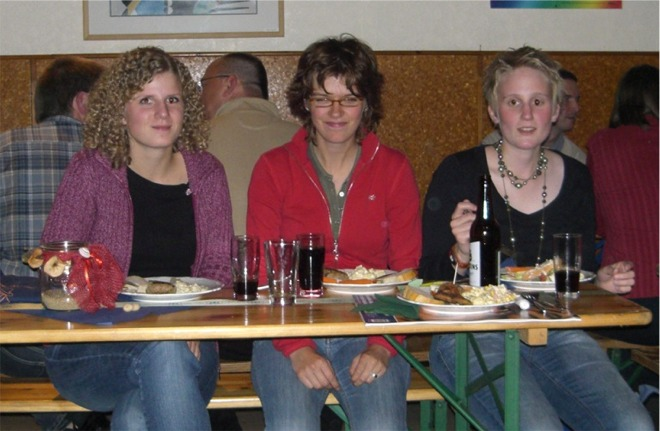
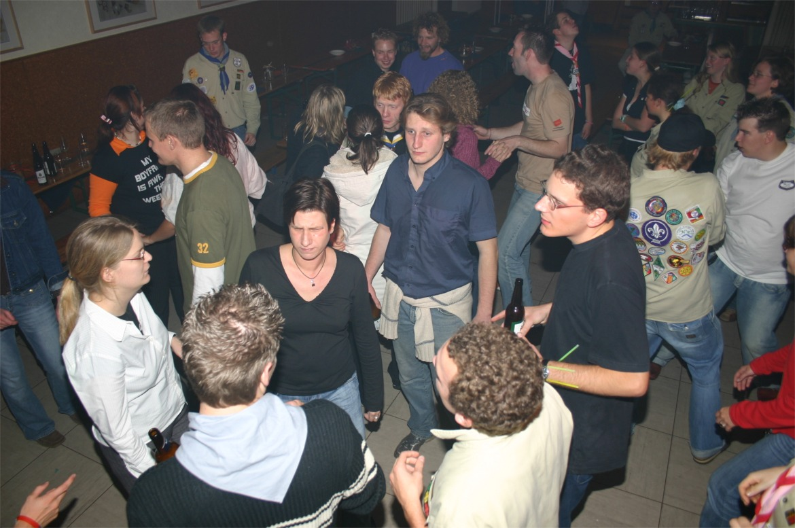
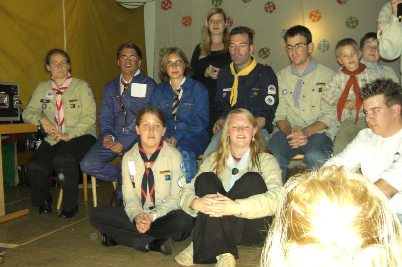
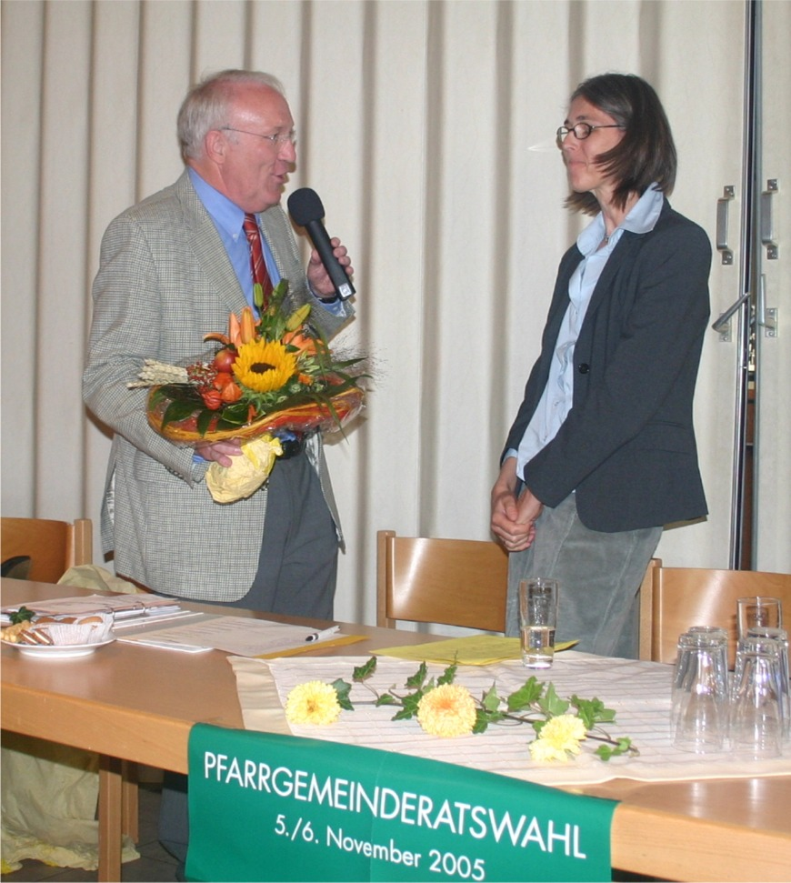

Weihnachtsmarkt 2005
Am 3. und 4. Dezember 2005 hat in unserer Pfarrgemeinde der 16. Weihnachtsmarkt stattgefunden.
Am 3. und 4. Dezember 2005 hat in unserer Pfarrgemeinde der 16. Weihnachtsmarkt stattgefunden.
Sprockhövel-Haßlinghausen
Kortenstr. 2, 45549 Sprockhövel-Haßlinghausen
den 25. 11. 2005
Bekanntmachung gem. § 20 Ziff. 2 der Wahlordnung (WO) der Namen aller PGR-Mitglieder
nach der konstituierenden Sitzung am 24.11.2005
Auf Grund des Wahlergebnisses und der Berufung dreier PGR-Mitglieder gehören nach der konstituierenden Sitzung am 24.11.2005 dem PGR die folgenden Damen und Herren an:
|
Name |
Status |
|
Pia Bautz |
Berufenes Mitglied |
|
Stefanie Bergmann |
Berufenes Mitglied |
|
Manfred Berretz |
Gewähltes Mitglied |
|
Stefan Breiter |
Gewähltes Mitglied |
|
Reiner Dauben |
Gewähltes Mitglied |
|
Monika Euteneuer |
Gewähltes Mitglied |
|
Thomas Fröschke |
Berufenes Mitglied |
|
Katrin Graf |
Gewähltes Mitglied |
|
Gisela Heide |
Stellv. Vorsitzende des KV |
|
Mihai Imbria |
Pfarrer |
|
Bernard Klimek |
Gewähltes Mitglied |
|
Sabine Rost |
Gewähltes Mitglied |
|
Katja Schlienbecker |
Gewähltes Mitglied |
|
Michael Schneider |
Gewähltes Mitglied |
|
Therese Weber |
Gewähltes Mitglied |
|
Claudia Wodausch |
Gewähltes Mitglied |
|
Christa Zelinski |
Gewähltes Mitglied |
Dem Vorstand gehören an:
|
Manfred Berretz |
Vorsitzender |
|
Stefan Breiter |
Stellv. Vorsitzender |
|
Thomas Fröschke |
Stellv. Vorsitzender |
|
Katrin Graf |
Schriftführerin |
|
Mihai Imbria |
Pfarrer |
gez.: Berretz
Vorsitzender des PGR
Pfarrgemeinderat der Pfarrgemeinde St. Josef
Sprockhövel-Haßlinghausen
Kortenstr. 2, 45549 Sprockhövel-Haßlinghausen
den 08. 09. 2005
Bekanntmachung des Wahlausschusses für die Pfarrgemeinderatswahl am 05./06.11.2005
gem. § 5 Ziff. 6 der Wahlordnung (WO)
1. Die Wahlen des neuen Pfarrgemeinderates finden am 5. und 6. November 2005 statt.
2. Das Wahllokal ist geöffnet am 05.11.05 von 16.45 Uhr bis 17.15 Uhr und von 18.00 Uhr bis 18.45 Uhr. Am 06.11.05 ist es von 10.00 Uhr bis 11.15 Uhr und von 12.00 Uhr bis 12.45 Uhr geöffnet.
3. Die Mitglieder des Wahlausschusses sind: Herr Pfr. Imbria, Frau Burkert, Herr Eyerund, Herr Frerich und Frau Heide.
4. Wahlberechtigt ist, wer zur katholischen Kirche gehört, am Wahltag das 16. Lebensjahr vollendet und in der Pfarrgemeinde seinen Hauptwohnsitz hat (§ 3 Ziff. 1 WO).
5. Es können auch außerhalb der Gemeinde Wohnende das aktive Wahlrecht ausüben und das passive Wahlrecht in Anspruch nehmen, wenn sie am Leben der Gemeinde aktiv Anteil nehmen. Die Ausübung des aktiven oder passiven Wahlrechts in mehreren Pfarreien ist unzulässig (§ 3 Ziff. 2 WO).
In das Wählerverzeichnis einer anderen Pfarrgemeinde (Wahlgemeinde) kann aufgenommen werden, wer am Leben einer anderen Pfarrgemeinde, in der er nicht seinen Hauptwohnsitz hat, aktiv teilnimmt und deshalb in dieser anderen Pfarrgemeinde wählen will. Er/sie teilt bis vier Wochen vor der Wahl dieses dem Wahlausschuss der Wahlgemeinde mit und bittet um Aufnahme in die Wählerliste (§ 4 Ziff. 1 WO).
6. Die Möglichkeit zur Briefwahl besteht für die Wahlberechtigten, die aus wichtigem Grund (Krankheit, Alter, Ortsabwesenheit) verhindert sind, zur Wahl zu kommen. Sie erhalten auf Antrag beim Wahlvorstand über das Pfarrbüro einen Briefwahlschein (§ 16 Ziff. 1 WO).
7. Weitere unter § 6 der Wahlordnung (WO) aufgelistete Aufgaben des Wahlausschusses sind im Schaukasten bei der Kirche ausgehängt.
gez.: Berretz
Vorsitzender des PGR
Der bisherige PGR-Vorsitzende Herr Berretz hat in der letzen Sitzung des Pfarrgemeinderats am 03.11.2005 allen Mitgliedern dieses Gremiums sehr herzlich für ihre Mitarbeit während der zurückliegenden Wahlperiode gedankt.
Dabei hat er darauf hingewiesen, dass sich in diesem wichtigen Gremium der Pfarrgemeinde fast alle Gruppierungen wiedergefunden und so lebendiges, menschliches Miteinander über die Grenzen der Pfarrgemeinde hinaus ermöglicht haben.
Berretz dankte insbesondere den vielen Helferinnen und Helfern sowie den weiteren Vorstandsmitgliedern, die durch ihre Arbeit das Gemeindeleben nicht nur beeinflusst, sondern auch wesentlich getragen haben.
Außerdem bedankt sich Herr Berretz jetzt nach der Wahl des neuen PGR an dieser Stelle beim Wahlausschuss und den -helferinnen und -helfern, durch die der reibungslose Ablauf der Wahlhandlung ermöglicht worden ist.
Be 06.11.2005
Herzlichen Glückwunsch zum 30-jährigen Bestehen des Stammes St. Josef, Haßlinghausen!
Ganz herzlich gratuliert die Kirchengemeinde St. Josef unseren Pfadfinderinnen und Pfadfindern zum 30-jährigen Stammesjubiläum!
Wir bedanken uns
· für euer großes Engagement im Interesse unserer Kinder und Jugendlichen,
· für soziale Leistungen, die ihr weltweit einbringt,
· für die nachhaltige pädagogische Arbeit, die ihr allwöchentlich im Rahmen der Gruppenstunden leistet,
· für den großen zeitlichen Aufwand, den ihr ehrenamtlich zur Verfügung stellt.
Wir hoffen, dass ihr eure Arbeit bei und mit den Pfadfindern auch zukünftig mit großer Freude auf euch nehmen werdet.
Wir wünschen euch allen einen erfreulichen Jubiläumsabend und dem Stamm für die Zukunft alles Gute.
Ein herzlicher Dank gilt auch Frau Elisabeth und Herrn Manfred Schüngel, die vor 30 Jahren bei uns in St. Josef diesen Pfadfinderstamm „ins Leben gerufen“ und dadurch den Grundstein zu einer segensreichen Arbeit an unseren Kindern und Jugendlichen gelegt haben.
Für den Pfarrgemeinderat
M. Berretz
Sprockhövel, den 22.10.2005

Bannereinzug zur Festmesse

Zum Abschluss des Gottesdienstes singen alle das Lied „Flinke Hände – flinke Füße“

Die Wös verfolgen interessiert das Festprogramm

Die Juffis als Rhythmusgruppe mit Instrumenten der Pfadfinderschaft: Holzheringe, Zeltstanden, Wasserkanister, Sippenkiste und Zitronenteebehälter

Herr Bürgermeister Dr. Walterscheid im Gespräch mit H. Pfarrer Imbria

Herr Bürgermeister Dr. Walterscheid überbringt die Grüße der Stadt Sprockhövel

Die Stammesgründer Elisabeth und Manfred Schüngel erfreuen sich…

… an den Darbietungen des Wölflingszirkus´

Die Gäste drängen sich vor der Bühne

Zwischenzeitlich stärkt man sich am von Eltern gespendeten Bufett…

… und sitzt anschließend vor gefüllten Tellern

Gäste des Festabends…


…oben: Ehemalige von nah und fern
… und links: Gast in kleinster Kluft

Quiz mit Köfte

Beim Tanz

Die Leiterrunde

Herr Berretz überreicht Frau Rüther zum Abschied einen Blumengruß.
Aus diesem Grund haben wir Frau Rüther im Rahmen unserer Pfarrversammlung 2005 herzlich verabschiedet und ihr für ihren weiteren privaten wie dienstlichen Lebensweg alles Gute und Gottes Segen gewünscht.
Bild: Philipp Berretz
Be 09.10.2005
Der PGR-Vorsitzende, Herr Berretz, begründete den zahlreich erschienenen Gemeindemitgliedern außerdem, dass durch die zwölf zu wählenden Kandidatinnen und Kandidaten möglichst viele Gruppierungen im PGR vertreten sein werden und so das Gemeindeleben aktiv mitbestimmen und begleiten können.
Weil lt. Satzung des PGR vom 28.04.1997 mindestens zwei Drittel der PGR-Mitglieder in geheimer Wahl gewählt werden müssen, kann/wird unser neuer PGR aus max. 18 Mitgliedern bestehen.
Be 09.10.2005
Neviges Wallfahrt 2005
Bei strahlend blauem Himmel sind am Samstag, den 17.09.2005 Pilgergruppen der Pfarreien St. Januarius aus Sprockhövel und St. Josef aus Haßlinghausen nach Neviges aufgebrochen, um im Mariendom zu Ehren der Mutter Gottes die Hl. Messe zu feiern.

Haßlinghauser Gruppe in der Nähe von Schee
In der Haßlinghauser Fußgruppe haben sich nach einer intensiven Meditation, geleitet von unserer Pfarrassistentin Frau Rüther, 23 Personen und in der Sprockhöveler Gruppe 11 Personen auf den Weg gemacht.
Lt. Beschluss des PGR vom 08.09.2005 sind zwölf Kandidatinnen und Kandidaten für unseren zukünftigen Pfarrgemeinderat zu wählen.
Und so ist gem. § 17 der Wahlordnung für die Gemeinderäte im Bistum Essen für den Pfarrgemeinderat in unserer Pfarrgemeinde St. Josef, Sprockhövel-Haßlinghausen gewählt worden:
|
Reihenfolge |
Name |
Vorname |
Erhaltene Stimmen |
|
1. |
Berretz |
Manfred |
113 |
|
2. |
Graf |
Katrin |
112 |
|
3. |
Klimek |
Bernard |
107 |
|
4. |
Weber |
Therese |
106 |
|
5. |
Euteneuer |
Monika |
100 |
|
6. |
Zelinski |
Christa |
100 |
|
7. |
Dauben |
Reiner |
92 |
|
8. |
Schneider |
Michael |
90 |
|
9. |
Wodausch |
Claudia |
88 |
|
10. |
Schlienbecker |
Katja |
84 |
|
11. |
Breiter |
Stefan |
72 |
|
12. |
Frege |
Claire |
71 |
|
|
|
|
|
| Nachrücker/in |
|
|
|
|
13. |
Rost |
Sabine |
69 |
|
14. |
Fröschke |
Thomas |
56 |
|
15. |
Bautz |
Pia |
52 |
|
16. |
Bergmann |
Stefanie |
47 |
|
17. |
Miletzki |
Wolfgang |
36 |

Altar und -kreuz auf unserem kath. Friedhof
Zur Friedhofssatzung (PDF-Datei)
In ihr werden unter § 15 die Ruhezeiten genannt.